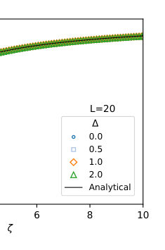
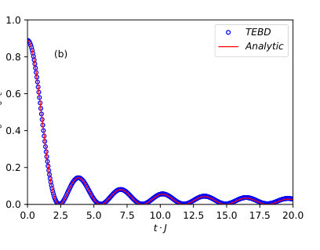
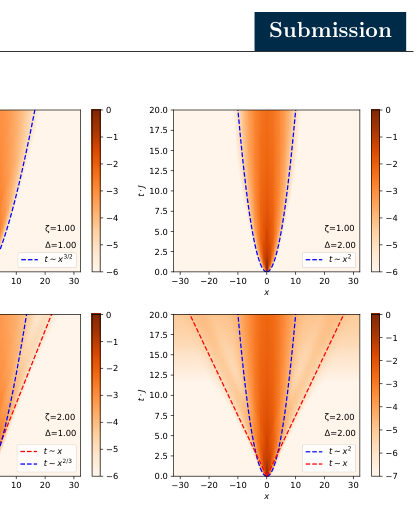
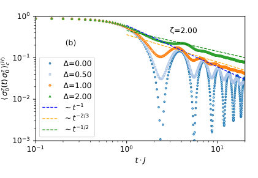
Highlighted author(s): Darrick Chang, Zala Lenarčič
Authors: Gianluca Lagnese, Laurin Brunner, Lorenzo Rossi, Darrick Chang, Markus Schmitt, Zala Lenarčič
Type: theory · Category: numerical methods · PDF: https://arxiv.org/pdf/2605.04640v1
Analysis basis: full PDF text, analyzed in chunks
Topic relevance: 🔥 methods for driven-dissipative 5/5 · 🔥 Dicke superradiance 4/5 · 🔥 free-space correlated emission 4/5 · entanglement & information structure 3/5 · non-equilibrium dynamics 3/5 · Keldysh / 2PI / non-Gaussian methods 2/5 · analog quantum simulation 2/5 · driven-dissipative phase transition 2/5 · exotic spin models in light-matter 2/5 · quantum measurements 2/5
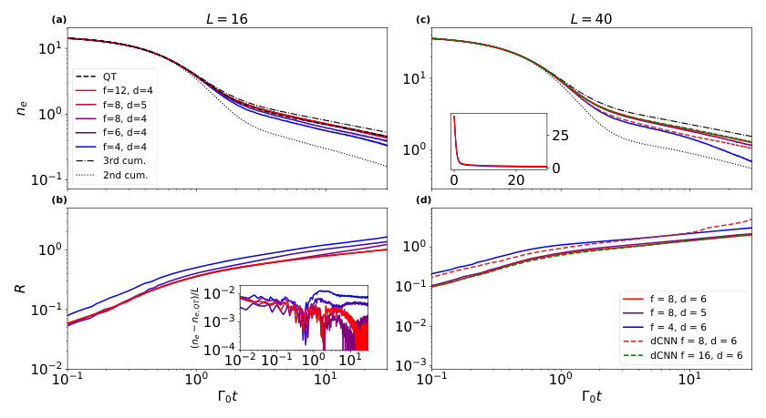
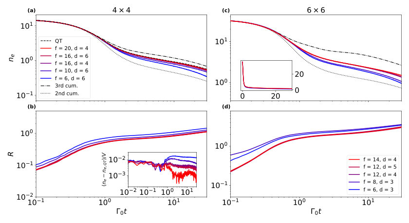
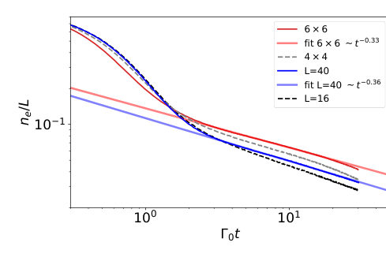
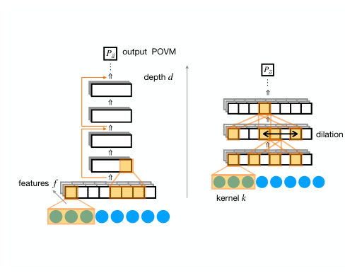
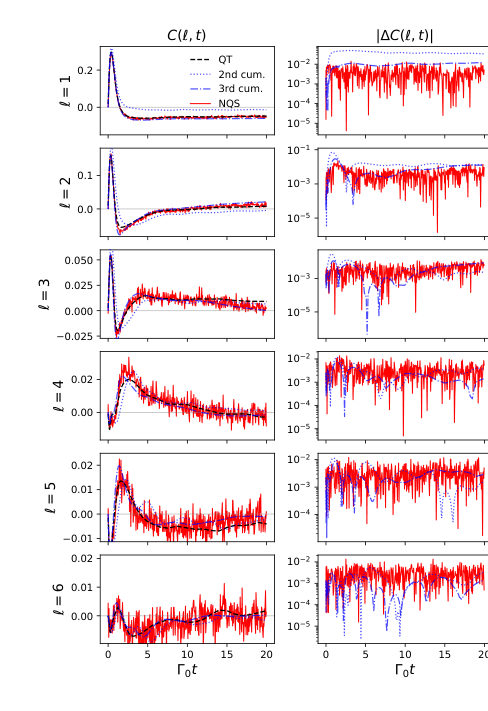
Summary. This paper introduces a neural network-based approach to simulate the many-body dissipative dynamics of large atom arrays. By using ResNet and dCNN architectures, the authors successfully model super- and sub-radiant regimes in 1D and 2D systems beyond the limits of exact diagonalization. The work demonstrates that neural networks can efficiently capture the complex, long-range correlations characteristic of subradiant decay.
Why it may be interesting. It provides a powerful new numerical tool (NQS) for studying the long-time subradiant regimes and many-body correlations in light-matter interfaces, which are otherwise inaccessible to standard methods.
Main problem. The challenge of simulating many-body super- and sub-radiant dynamics in large-scale light-matter interfaces where traditional exact and tensor-network methods fail.
Main result. The first successful application of Neural Quantum States (NQS) to capture the dissipative dynamics of 1D and 2D atom arrays up to 40 atoms, demonstrating that dCNN architectures can efficiently capture long-range correlations with fewer parameters than ResNet.
Method. Neural Quantum States (NQS) using ResNet and dilated CNN (dCNN) architectures, implemented via a POVM-based representation and evolved using the Time-Dependent Variational Principle (TDVP) and Monte Carlo sampling.
Model / system. Ordered, densely packed 1D and 2D arrays of cold atoms in free space, modeled by an effective spin Hamiltonian with photon-mediated long-range dipolar interactions and a Lindblad master equation.
Key observables. Number of excited atoms (excitation density), connected spin-spin correlators, and cumulative TDVP error (KL divergence).
Important parameters / regimes. Inter-atom distance (d), decay rate (Gamma_0), network depth (d), number of features (f), and kernel size (k).
Assumptions / limitations. The light field is integrated out to provide an effective spin description; the use of a tetrahedral POVM for density matrix representation.
Figures summary. Figure 1 and 2 show benchmarking of NQS against exact quantum trajectories and convergence studies in 1D and 2D; Figure 3 compares excitation density across system sizes; Figure 4 provides a schematic comparison of ResNet and dCNN architectures.
Paper structure. The paper introduces the problem of simulating large-scale dissipative dynamics, describes the NQS/POVM methodology and neural architectures (ResNet vs dCNN), presents benchmarking results against exact and semi-classical methods, and concludes with efficiency comparisons and future directions.
There is significant interest in exploring novel phenomena in quantum light-matter interfaces, which are driven by the combination of structured dissipation and long-range interactions that are typical in such systems. To this end, it is important to develop new general numerical simulation techniques, which can access large system sizes and are not based on semi-classical approaches. Here, we report the first application of neural quantum states to obtain the dissipative dynamics of light-matter-coupled systems beyond what is accessible with exact and tensor-network calculations. We specifically apply this method to simulate the many-body emission dynamics of approximately 40 atoms, arranged in dense arrays in one and two dimensions. These systems have been chosen because they can support prominent subradiant dynamics at late times and could be realized with cold atomic quantum simulators.
Highlighted author(s): Alexey V. Gorshkov
Authors: Erfan Abbasgholinejad, Sean R. Muleady, Jacob Bringewatt, Lorcan O. Conlon, Alexey V. Gorshkov
Type: theory · Category: quantum information and computing · PDF: https://arxiv.org/pdf/2605.04136v1
Analysis basis: full PDF text, analyzed in chunks
Topic relevance: quantum measurements 3/5
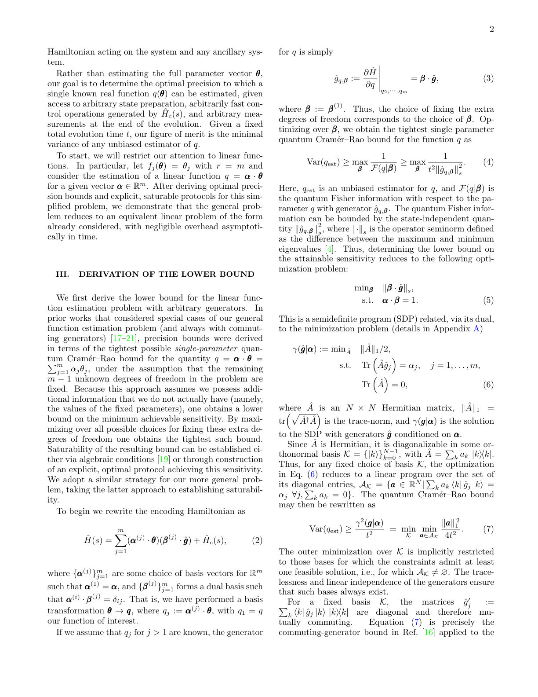
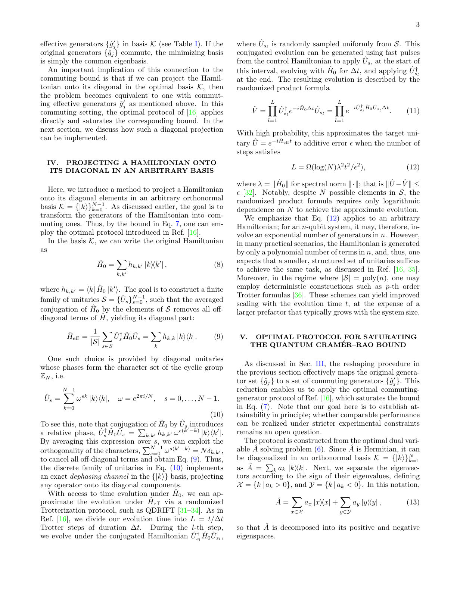
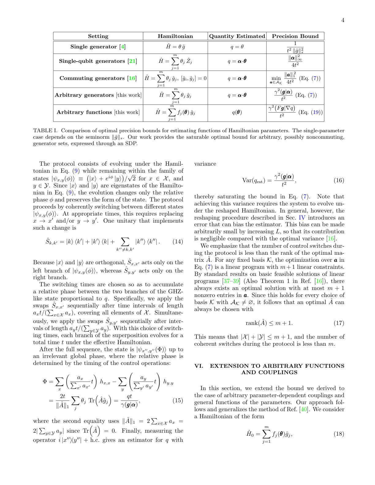
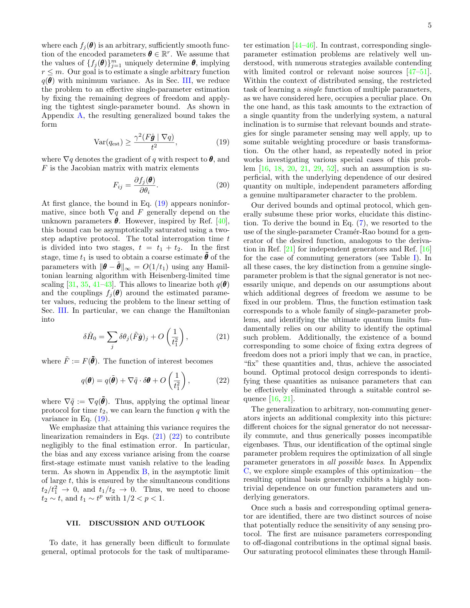
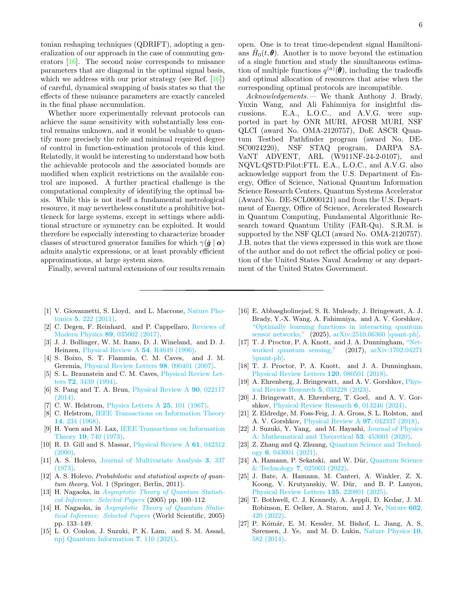
Summary. This paper solves the problem of finding the fundamental quantum limit for estimating functions of multiple parameters in a general Hamiltonian. It proves that this complex task can be reduced to an optimized single-parameter problem and provides a practical, two-step adaptive protocol to reach this limit. This unifies previous results and extends them to the most general case of non-commuting generators.
Why it may be interesting. This work provides a fundamental framework for quantum sensing, offering a way to achieve optimal precision when dealing with complex, non-commuting signal generators, which is highly relevant for many-body sensing and quantum metrology.
Main problem. Determining the ultimate quantum precision limit for estimating a scalar function of multiple unknown parameters encoded in a general, potentially non-commuting Hamiltonian.
Main result. The authors derive a tight, saturable lower bound on the variance of the estimator that reduces the complex multi-parameter function estimation problem to an optimized single-parameter quantum Cramér-Rao bound.
Method. The problem is mapped to an effective single-parameter estimation problem using a semidefinite programming (SDP) framework and a two-step adaptive protocol involving Hamiltonian reshaping and randomized Trotterization.
Model / system. A general time-independent signal Hamiltonian H0 = sum f_j(theta) g_j, where theta are unknown parameters, f_j are smooth functions, and g_j are linearly independent, traceless Hermitian generators, supplemented by a controllable, time-dependent control Hamiltonian.
Key observables. The variance of the estimator for the target function q(theta).
Important parameters / regimes. The precision parameter gamma (derived from an SDP), the total interrogation time t, the Jacobian matrix F of the couplings, and the conditioning constant kappa.
Assumptions / limitations. Parameters are time-independent, functions are twice continuously differentiable, and generators are linearly independent and traceless; the protocol assumes an asymptotic limit of large total time t.
Figures summary. Table I compares optimal precision bounds across various scenarios including single-parameter, commuting, and arbitrary generator sets.
Paper structure. The paper defines the multi-parameter function estimation problem, derives a tight lower bound via SDP duality, proposes a constructive protocol using Hamiltonian reshaping and adaptive estimation, and provides error analysis and stability theorems.
Estimation of physical parameters encoded in a Hamiltonian is a central task in quantum sensing and learning. While the ultimate precision limit for estimating a single parameter coupled to a single generator is well established, the corresponding bound for estimating a function of multiple parameters-each coupled to distinct and possibly non-commuting generators-remains unknown in general. Here, we derive the ultimate quantum limit and present an estimation protocol for any function of parameters in a general Hamiltonian that attains this bound. We show that, although the task is fundamentally a multiparameter problem, our tight bound reduces to an optimized single-parameter quantum Cramér-Rao bound, even for arbitrary generator sets. Our result unifies and extends previous works, providing a general framework for optimal function estimation in quantum systems.
Authors: Tarun Grover
Type: theory · Category: statistical mechanics · PDF: https://arxiv.org/pdf/2605.04540v1
Analysis basis: full PDF text, analyzed in chunks
Topic relevance: 🔥 entanglement & information structure 5/5 · 🔥 non-equilibrium dynamics 4/5 · non-equilibrium universality 3/5 · measurement-induced transitions 2/5 · scars & prethermalization 2/5
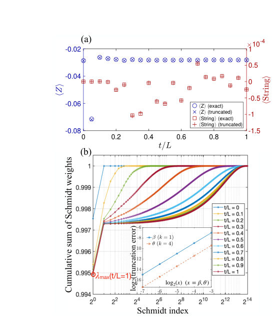
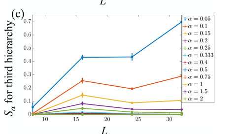
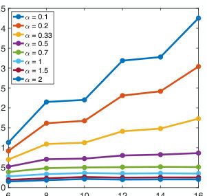
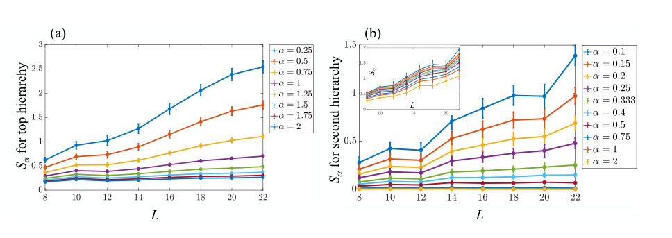
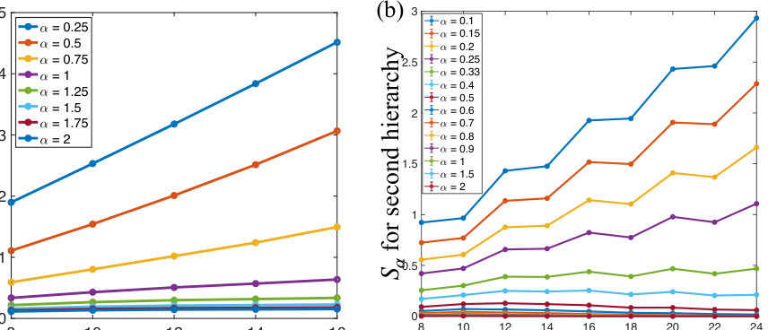
Summary. The paper discovers that local quantum quenches in chaotic systems create a hierarchical entanglement structure where different Renyi indices exhibit different scaling laws. It identifies a 'hidden' area-law sector that carries the linear response to the quench, suggesting that parts of the highly entangled state may be efficiently approximable by tensor networks.
Why it may be interesting. This work is highly relevant to many-body dynamics as it identifies a specific, hidden structure in entanglement that could potentially allow for more efficient classical simulations of otherwise volume-law entangled states.
Main problem. Investigating the entanglement structure of quantum many-body systems following local quenches, specifically looking for hidden area-law sectors and hierarchical entanglement transitions.
Main result. The authors reveal a Renyi-index-tuned transition where S_alpha obeys an area law for alpha > 1 and a volume law for alpha <= 1, alongside a recursive, hierarchical structure of entanglement transitions in the Schmidt sectors.
Method. The study uses analytical derivations in a circuit model, exact diagonalization of random circuits and chaotic spin chains, and tensor network-based approximation analysis.
Model / system. The paper analyzes 1D random unitary circuits (Haar-random, Clifford+T, and U(1) symmetric) and local quantum quenches on the canonical purification of Gibbs states in the mixed-field Ising model.
Key observables. Renyi entropies (S_alpha), von Neumann entropy (S_1), Schmidt eigenvalues, and truncation error.
Important parameters / regimes. Renyi index (alpha), quench strength (theta or epsilon), inverse temperature (beta), and time (t).
Assumptions / limitations. Assumes generic chaotic dynamics and uses a maximally scrambled limit for certain analytical bounds; assumes the existence of a large, time-independent Schmidt eigenvalue.
Figures summary. Figures compare expectation values and truncation errors against exact values, show the cumulative sum of Schmidt weights, illustrate the hierarchical scaling of Renyi entropies, and demonstrate the monotonic growth and saturation of entropy in both circuit and Ising models.
Paper structure. The paper introduces the problem of entanglement structure, presents a circuit model to derive the Renyi-index-tuned transition, extends these findings to local quenches of Gibbs states, provides a recursive analysis of the hierarchical structure, and validates results via numerical simulations of random circuits and the Ising model.
Chaotic many-body dynamics typically generates volume-law entanglement from initially low-entangled states. We reveal an intricate, hierarchical entanglement structure in local quantum quenches, both in the canonical purification of locally quenched Gibbs states and in a companion pure-state circuit model. In either setting, the full state exhibits a Renyi-index-tuned transition: at long times, $S_{α>1}$ obeys an area law, while $S_{α\le 1}$ is volume-law. More strikingly, the response linear in the quench strength is carried by only an O(1)-dimensional dominant Schmidt sector; the corresponding states exhibit their own area-to-volume-law transitions at critical indices $α_c<1$, implying polynomial-bond-dimension approximability in one dimension. We provide evidence that this hierarchy persists recursively: upon bipartitioning the dominant Schmidt states, their leading Schmidt sectors exhibit analogous structure. We derive the mechanism analytically in the circuit model, prove the $S_{α>1}$ area law for locally quenched Gibbs states, and support the hierarchy by exact diagonalization of random circuits and locally quenched Gibbs states of chaotic spin chains.
Authors: Abhishek Maurya, Sachin Verma, Bojong Kim, Biswanath Bhoi, Rajeev Singh, Sang-Koog Kim
Type: both · Category: other · PDF: https://arxiv.org/pdf/2605.05018v1
Analysis basis: full PDF text, analyzed in chunks
Topic relevance: 🔥 spintronics-quantum-optics interface 5/5 · correlated / nonlocal dissipation 2/5 · interference shaping light 2/5 · quantum optics experiment 2/5
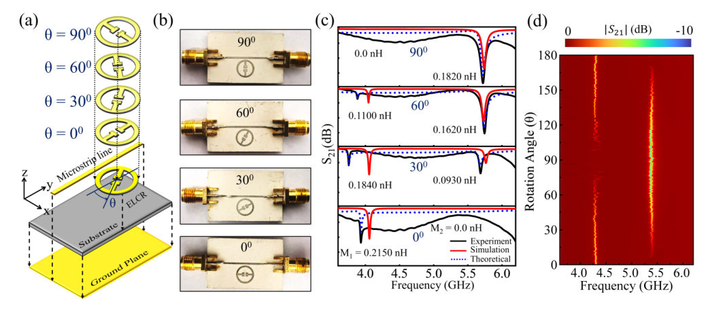
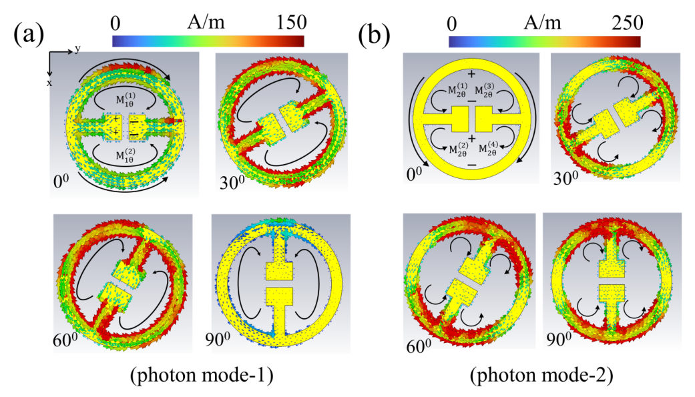
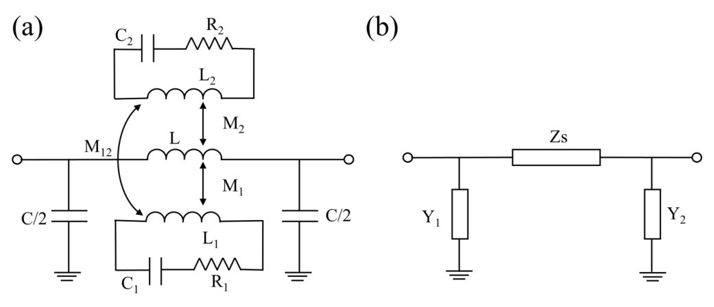
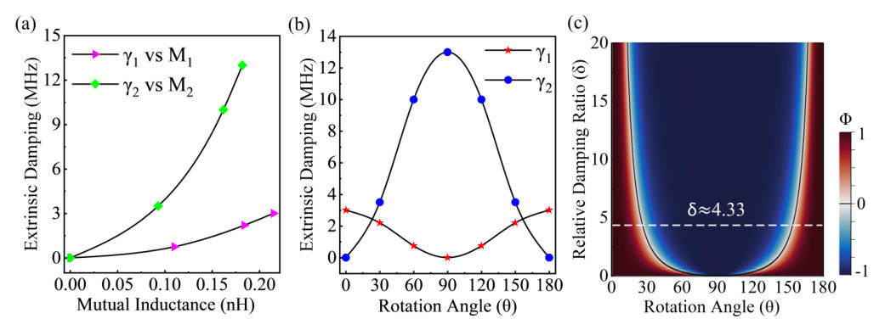
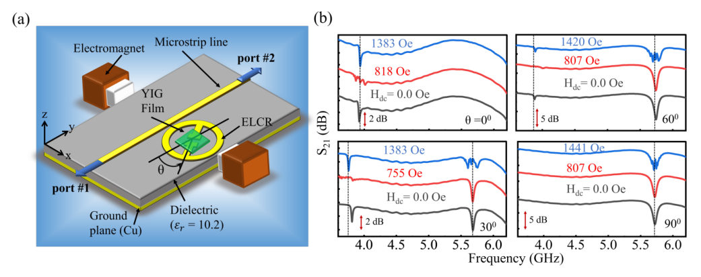
Summary. The researchers developed a method to control photon-magnon interactions by simply rotating a resonator in a planar architecture. By changing the orientation, they can switch between different photon modes and redistribute coupling strengths. This provides a scalable and robust way to engineer hybrid quantum-magnonic interfaces.
Why it may be interesting. It demonstrates a versatile mechanism for 'polarization engineering' in hybrid systems, providing a way to control light-matter interaction channels and dissipation pathways via geometric orientation, which is highly relevant to circuit QED and open quantum systems.
Main problem. Achieving precise, reconfigurable control over photon-magnon coupling (PMC) pathways in hybrid systems without relying on complex external tuning like magnetic fields or active components.
Main result. Demonstrated that rotating an electric-LC resonator (ELCR) enables polarization-selective switching between two orthogonal photon modes, allowing for the continuous redistribution of interaction strength between competing photon-magnon hybridization channels.
Method. The study combines full-wave electromagnetic simulations (CST), an equivalent circuit model (ABCD-matrix formalism), and an effective three-mode Hamiltonian using input-output theory to analyze experimental transmission spectra.
Model / system. A planar cavity-magnonic platform consisting of an electric-LC resonator (ELCR) side-coupled to a microstrip transmission line, integrated with a Yttrium Iron Garnet (YIG) thin film.
Key observables. Transmission coefficient (S21), photon-magnon coupling strengths (g31, g23), photon mode frequencies, and radiative (extrinsic) damping rates.
Important parameters / regimes. Rotation angle (theta), coupling strengths (g), intrinsic and extrinsic damping rates (beta, gamma), and the dimensionless damping order parameter (Phi_gamma).
Assumptions / limitations. Application of the Rotating-Wave Approximation (RWA) to the Hamiltonian and the Markov approximation for treating waveguide coupling strengths.
Figures summary. Fig 1: Device schematic, optical images, and transmission spectra at various angles. Fig 2: Simulated surface-current distributions showing mode-specific loop configurations. Fig 3: Equivalent circuit models. Fig 4: Extracted damping rates vs. mutual inductance and mode-splitting colormaps.
Paper structure. The paper introduces the problem of coupling control, describes the planar ELCR-YIG platform, presents the electromagnetic and circuit models for polarization-dependent excitation, details the three-mode Hamiltonian for hybridization, and concludes with experimental validation of mode switching and coupling redistribution.
This work presents polarization-selective photon-magnon coupling (PMC) in a planar cavity-magnonic platform consisting of an electric-LC resonator (ELCR) side-coupled to a microstrip transmission line and integrated with a yttrium iron garnet (YIG) thin film. The ELCR supports two orthogonal photon modes at $\sim 3.93$ GHz and $\sim 5.73$ GHz, whose excitation and radiative damping are governed by the resonator orientation relative to the microwave-field polarization. Rotating the resonator enables controlled switching between these modes and tunable photon-magnon hybridization. An equivalent circuit model including intrinsic and extrinsic damping successfully reproduces the polarization-driven mode switching, while an effective three-mode Hamiltonian accurately captures the coupled-mode evolution. The results reveal strong angular tunability of the PMC strength through redistribution between two competing interaction channels. At $θ= 0^\circ$, only the lower-frequency photon mode is excited, yielding $g_{31}=56.5$ MHz, while the higher-frequency mode remains inactive. As the angle increases, both channels become active: $g_{31}$ increases from $56.5$ to $98$ MHz over $0^\circ$-$60^\circ$ before vanishing at $90^\circ$, whereas $g_{23}$ decreases from $76$ to $30$ MHz over $30^\circ$-$90^\circ$. The observed evolution yields a measured transition near $25.7^\circ$ and a symmetry-related model-predicted transition near $154.3^\circ$. These findings establish resonator-orientation--driven polarization selectivity as a versatile mechanism for controllable photon--magnon interactions in planar architectures.
Authors: Yuhan Liu
Type: theory · Category: quantum information and computing · PDF: https://arxiv.org/pdf/2605.04159v1
Analysis basis: full PDF text, analyzed in chunks
Topic relevance: 🔥 entanglement & information structure 4/5 · 🔥 methods for driven-dissipative 4/5 · driven-dissipative phase transition 3/5 · non-equilibrium dynamics 3/5 · correlated / nonlocal dissipation 2/5 · non-equilibrium universality 2/5
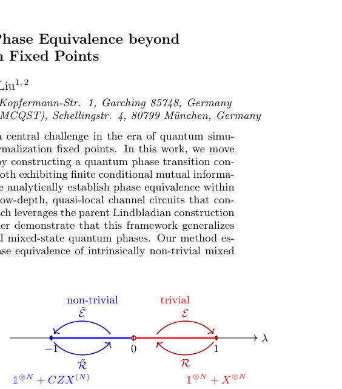
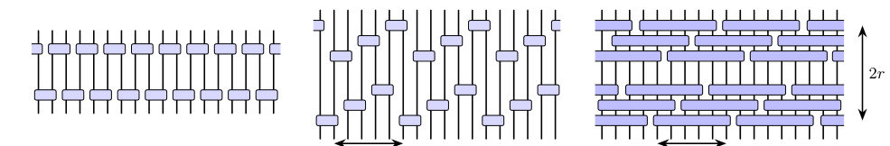
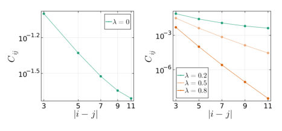
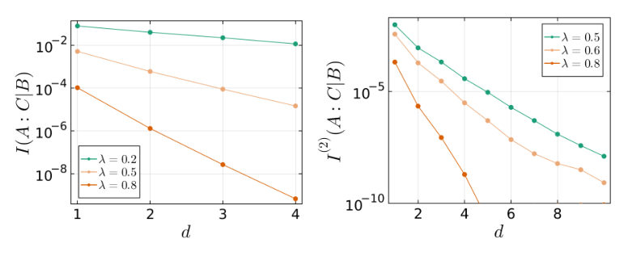
Summary. This paper develops a new framework to prove that different mixed-state quantum phases are equivalent by constructing local quantum circuits that transform one into the other. It successfully extends this proof beyond the usual renormalization fixed points to include intrinsically nontrivial phases. The method uses the parent Lindbladian construction to ensure that the circuits preserve the system's underlying symmetries.
Why it may be interesting. This is highly relevant for researchers in open quantum systems and many-body dynamics as it provides a rigorous framework for characterizing the stability and equivalence of non-equilibrium mixed-state phases beyond standard fixed-point approaches.
Main problem. Establishing phase equivalence for mixed-state quantum phases beyond the renormalization fixed-point paradigm, specifically when conditional mutual information remains finite.
Main result. The author analytically establishes phase equivalence within two distinct 1D mixed-state phases by constructing low-depth, quasi-local channel circuits using a parent Lindbladian construction.
Method. The work utilizes Matrix Product Operators (MPOs), the parent Lindbladian construction, and the Petz recovery map to generate channel circuits that preserve global symmetries.
Model / system. One-dimensional quantum systems described by Matrix Product Density Operators (MPDOs) and a path of mixed states $\rho(\lambda)$ connecting a trivial phase to an intrinsically nontrivial phase with anomalous $Z_2$ or $Z_N$ symmetry.
Key observables. Conditional Mutual Information (CMI), Markov length, entanglement entropy, and two-point correlation functions.
Important parameters / regimes. The control parameter $\lambda$ (defining the phase transition at $\lambda=0$), bond dimension, and the distance $d$ between regions.
Assumptions / limitations. The construction assumes a finite Markov length and relies on the existence of a pre-bialgebraic structure to ensure the locality of the channel circuits.
Figures summary. Figure 1 shows a mixed-state phase diagram with trivial and nontrivial phases; Figure 2 illustrates the configuration of the constructed channel circuits; Figure 4 shows numerical decay of CMI and Renyi-2 CMI with distance.
Paper structure. The paper begins by defining phase equivalence and the problem of finite CMI, introduces a model with a path of mixed states, develops a construction using the parent Lindbladian to create symmetry-preserving channel circuits, and concludes with generalizations to $Z_N$ symmetries and numerical verification of criticality.
Understanding mixed-state quantum phases is a central challenge in the era of quantum simulation, where many existing studies focus on renormalization fixed points. In this work, we move beyond the renormalization fixed-point paradigm by constructing a quantum phase transition connecting two distinct one-dimensional fixed points, both exhibiting finite conditional mutual information and one of which is intrinsically nontrivial. We analytically establish phase equivalence within each of the two phases by explicitly constructing low-depth, quasi-local channel circuits that connect states within each phase. Crucially, our approach leverages the parent Lindbladian construction to generate the desired channel circuits. We further demonstrate that this framework generalizes naturally to a broad class of intrinsically nontrivial mixed-state quantum phases. Our method establishes a framework for rigorously analyzing phase equivalence of intrinsically non-trivial mixed states beyond the renormalization fixed points.
Authors: Qianyang Chen, Mikhail Prokopenko
Type: theory · Category: statistical mechanics · PDF: https://arxiv.org/pdf/2605.04508v1
Analysis basis: full PDF text, analyzed in chunks
Topic relevance: 🔥 non-equilibrium dynamics 4/5 · driven-dissipative phase transition 3/5 · entanglement & information structure 3/5 · methods for driven-dissipative 3/5 · non-equilibrium universality 3/5 · Keldysh / 2PI / non-Gaussian methods 2/5
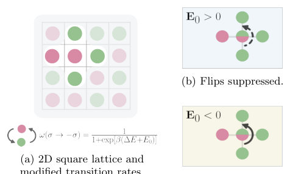
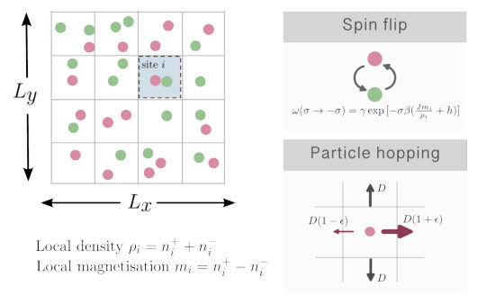
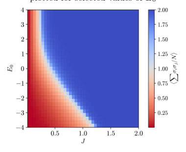
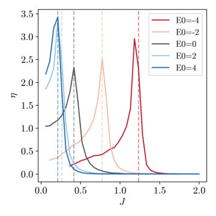
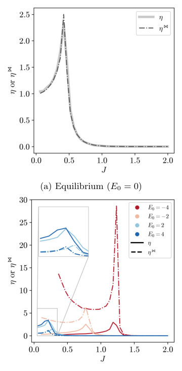
Summary. This paper investigates the efficiency of energy conversion into macroscopic order in nonequilibrium steady states. It demonstrates that while thermodynamic efficiency peaks at phase transitions, it diverges from inferential efficiency due to the violation of the fluctuation-dissipation theorem out of equilibrium.
Why it may be interesting. The study provides a fundamental link between thermodynamics and information theory in nonequilibrium systems, which is highly relevant to understanding dissipation and control in open quantum systems and many-body dynamics.
Main problem. Determining how efficiently nonequilibrium self-organizing systems convert consumed energy into macroscopic order and investigating the divergence between thermodynamic and inferential efficiency out of equilibrium.
Main result. Thermodynamic efficiency maximizes at phase transitions in both equilibrium and nonequilibrium steady states, while the gap between thermodynamic and inferential efficiency serves as a measure of the system's distance from equilibrium.
Method. The study uses Monte Carlo simulations and a refined mean-field approximation (treating density and magnetization as independent Gaussian variables) to analyze two models.
Model / system. The study focuses on two nonequilibrium models: the Persistent Ising Model, which uses a non-conservative drive to break detailed balance, and the Active Ising Model, which features self-propelled particles on a 2D lattice.
Key observables. Thermodynamic efficiency (eta), inferential efficiency (eta_triangular_triangle), Shannon entropy, infinitesimal work, and magnetization.
Important parameters / regimes. Coupling strength (J), external drive (E0), self-propulsion (epsilon), external magnetic field (h), and lattice size.
Assumptions / limitations. The refined mean-field approach assumes density and magnetization are independent Gaussian random variables, which fails to capture the homogeneous bistable phase and becomes inaccurate in strong-coupling regimes.
Figures summary. Figure 1 shows the Persistent Ising model dynamics; Figure 7 shows phase plots and profiles for the Active Ising model; Figure 11 demonstrates efficiency peaks at phase transitions; Figure 12 shows finite-size effects on efficiencies.
Paper structure. The paper introduces the problem of energy-to-order conversion, defines the information-theoretic framework, applies it to the Persistent and Active Ising models, analyzes phase transitions and efficiency divergence, and concludes with a discussion on the Principle of Super-efficiency.
Active matter generates order or patterns through nonequilibrium dynamics. An open research challenge is to determine how efficiently a nonequilibrium self-organising system can convert consumed energy into macroscopic order. We study an information-theoretic quantity that directly addresses this challenge by estimating the entropy reduction induced by a small control-parameter perturbation, relative to the generalised work required for the perturbation. This quantity has previously been considered mainly in an equilibrium or near-equilibrium context, and here we extend this framework and apply it to two nonequilibrium self-organising systems: persistent and active Ising models. We observe that the thermodynamic efficiency of nonequilibrium systems maximises at phase transitions, as in equilibrium systems. Furthermore, we compare thermodynamic efficiency and inferential efficiency across control parameters. While these two quantities are equal in equilibrium as a consequence of the fluctuation-dissipation theorem, we report that they diverge out of equilibrium, and the gap reflects how far the system is from equilibrium.
Authors: Adel Ali, Alexey Belyanin
Type: theory · Category: quantum information and computing · PDF: https://arxiv.org/pdf/2605.04384v1
Analysis basis: full PDF text, analyzed in chunks
Topic relevance: 🔥 correlated cavity matter 4/5 · analog quantum simulation 3/5 · exotic spin models in light-matter 3/5 · quantum measurements 3/5 · Tavis-Cummings & cavity-many-emitter 2/5 · correlated / nonlocal dissipation 2/5
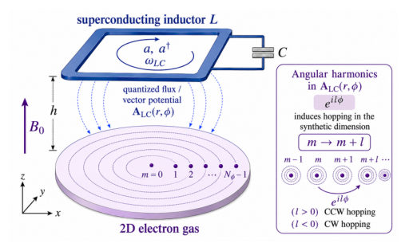
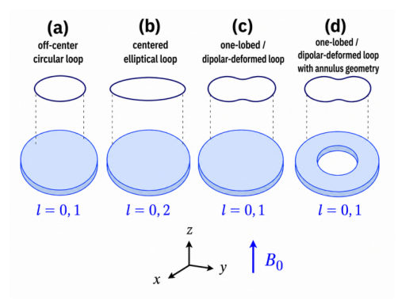
Summary. This paper proposes a new platform for topological quantum computing using a 2D electron gas coupled to a superconducting LC resonator. By using the angular momentum states of the lowest Landau level as a synthetic dimension, the authors show how to engineer a Kitaev chain with controllable Majorana zero modes. The platform's main advantage is the ability to perform non-local readout and control of Majorana states using standard circuit QED techniques.
Why it may be interesting. It presents a hybrid architecture combining circuit QED and semiconductor physics to create a programmable synthetic dimension for topological states, which is highly relevant for developing scalable topological quantum computing.
Main problem. The difficulty of achieving unambiguous realization, manipulation, and scalable implementation of Majorana zero modes (MZMs) in 1D topological superconductors, specifically regarding braiding and non-local readout.
Main result. The authors propose a tunable synthetic-dimension platform where a superconducting LC circuit induces the necessary hopping and pairing to realize a Kitaev chain, enabling robust non-local readout of Majorana parity.
Method. The study uses a Schrieffer-Wolff-like reduction in the dispersive regime to eliminate the LC mode and projects the Hamiltonian onto the lowest Landau level, using angular harmonic expansion to engineer interactions.
Model / system. A 2D electron gas (2DEG) in a strong perpendicular magnetic field coupled to a superconducting LC resonator, where angular-momentum states in the lowest Landau level serve as a synthetic 1D lattice.
Key observables. The dispersive cavity shift (chi), which allows for the measurement of Majorana fermion parity via the reflected microwave phase.
Important parameters / regimes. The off-resonant/dispersive regime (omega_LC >> electronic scales); topological criterion |mu_eff| < 2|t1|; energy scales for GaAs and InSb (e.g., induced gaps of 20-40 ueV for GaAs).
Assumptions / limitations. The LC mode is in its vacuum ground state; the LC loop geometry is smooth to avoid high-order harmonics; the system operates in the dispersive regime.
Figures summary. Figure 1 shows a schematic of a disk-shaped 2DEG coupled to an LC circuit.
Paper structure. The paper introduces the physical platform, derives the effective Hamiltonian via Landau-level projection and dispersive elimination, demonstrates the mapping to the Kitaev chain model, provides numerical estimates for GaAs and InSb, and discusses readout and geometric engineering.
We introduce a tunable synthetic-dimension platform for realizing Kitaev-chain physics with high degree of control over Majorana zero modes. It is based on a generic Landau-quantized two dimensional electron system coupled to the magnetic flux of a superconducting LC circuit. The structured vector potential of a superconducting LC inductor induces attractive interactions between electron angular-momentum states at the lowest Landau level. These states serve as a synthetic dimension for the coveted fermionic Kitaev chain, with Majorana zero modes existing at the boundaries of the angular-momentum lattice. The crucial advantage of this proposal is the possibility of a robust, nonlocal readout and control of the Majorana states by a LC resonator. The platform relies on mature circuit QED and semiconductor technologies and provides a promising pathway to topological quantum computing.
Authors: Cătălin Paşcu Moca, Doru Sticlet, Ovidiu I. Pâţu, Balazs Dóra
Type: theory · Category: strongly correlated electrons · PDF: https://arxiv.org/pdf/2605.05162v1
Analysis basis: full PDF text, analyzed in chunks
Topic relevance: 🔥 methods for driven-dissipative 4/5 · 🔥 non-equilibrium dynamics 4/5 · 🔥 non-equilibrium universality 4/5 · driven-dissipative phase transition 2/5 · entanglement & information structure 2/5




Summary. This paper explores how dissipation modifies the spreading of correlations in an XXZ spin chain. It demonstrates that while dissipation eventually leads to exponential decay, the underlying transport universality classes and light-cone structures remain intact during the early-time dynamics.
Why it may be interesting. It provides critical insights into the robustness of many-body transport phenomena (like KPZ scaling) and the stability of causal light-cone structures in the presence of environmental decoherence, which is central to open quantum systems and many-body dynamics.
Main problem. The study investigates how dissipation (spin loss and pumping) affects the dynamical spin correlations and transport universality classes in a 1D XXZ spin chain.
Main result. The fundamental transport universality classes (ballistic, KPZ, and diffusive) and the light-cone structure are preserved at short times, while dissipation causes exponential damping of correlations at long times.
Method. The authors use vectorized Time-Evolving Block Decimation (TEBD) for interacting regimes and a third-quantization framework with a Pfaffian representation for the noninteracting limit.
Model / system. A 1D spin-1/2 XXZ spin chain subject to Lindblad dynamics with uniform local spin-loss and pumping, leading to a featureless product state steady state.
Key observables. Longitudinal and transverse two-point spin correlators, and longitudinal spin autocorrelation.
Important parameters / regimes. Anisotropy (Delta), spin fugacity (zeta), dissipation rate (Gamma), and the crossover time scale (t*).
Assumptions / limitations. The steady state is assumed to be a Gaussian product state; numerical results are subject to bond dimension and time-step constraints.
Figures summary. Figures show magnetization vs. fugacity, spatiotemporal structures of longitudinal correlations (identifying light cones and dynamical exponents), and the decay of transverse/longitudinal autocorrelations.
Paper structure. The paper introduces the dissipative XXZ model, establishes the steady state, analyzes unitary evolution (quench) dynamics, extends the study to full Lindbladian dynamics, and provides exact analytical benchmarks for the noninteracting limit.
We study dynamical spin correlations in a dissipative XXZ spin chain subject to uniform local spin-loss and pumping. Starting from a mixed steady state that is featureless albeit possessing finite magnetization, rich dynamics emerges in time-dependent two-point correlators evaluated on top of it. For unitary evolution in which the reservoir is absent, the longitudinal correlators reproduce the established hierarchy of spin-transport universality classes - ballistic, Kardar-Parisi-Zhang (KPZ) superdiffusive, and diffusive - across the phase diagram. However, for finite magnetization, additional ballistic light cone propagation gets superimposed on the previous universality classes, arising from magnon propagation.The transverse correlator displays very fast, exponential decay of correlations without wavefront propagation in the easy-plane case. At the isotropic point, it follows KPZ scaling due to $SU(2)$ symmetry, while in the easy-axis regime, it is characterized by ballistic spreading of correlations. Under full Lindbladian dynamics, the universality classes are preserved at early times, while the correlations acquire an overall exponential damping in the long-time limit. In terms of methods, we have used vectorized TEBD for numerical simulations and exact analytical results obtained via a Pfaffian representation and the third-quantization framework for the noninteracting XX case.
Authors: Lucas C. Céleri, Krissia Zawadzki, Ivan Medina, Diogo O. Soares-Pinto
Type: theory · Category: statistical mechanics · PDF: https://arxiv.org/pdf/2605.04161v1
Analysis basis: full PDF text, analyzed in chunks
Topic relevance: 🔥 entanglement & information structure 4/5 · 🔥 non-equilibrium dynamics 4/5 · driven-dissipative phase transition 3/5 · non-equilibrium universality 3/5 · Keldysh / 2PI / non-Gaussian methods 2/5
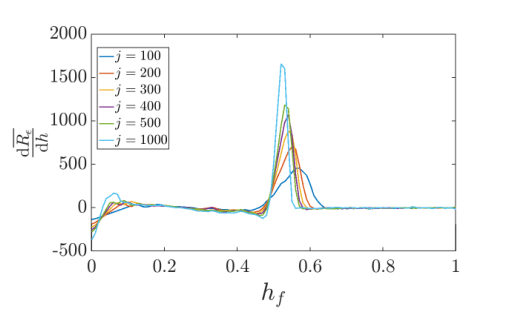
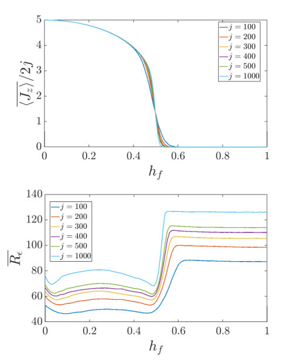
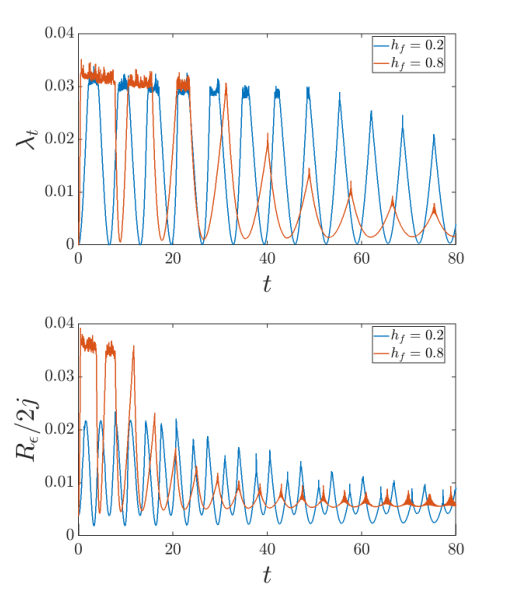
Summary. This paper connects the concept of quantum state texture, called rugosity, to the identification of dynamical quantum phase transitions. It proves that rugosity can act as an order parameter for Type-I transitions and is directly related to the Loschmidt rate function in Type-II transitions. This establishes rugosity as a useful tool for diagnosing criticality in many-body systems.
Why it may be interesting. It provides a new information-theoretic perspective on nonequilibrium dynamics, linking the generation of quantum resources (texture) to the emergence of thermodynamic phase transitions and complexity.
Main problem. The study investigates whether 'rugosity' (a measure of quantum state texture) can serve as a fundamental diagnostic tool for identifying and characterizing both Type-I and Type-II dynamical quantum phase transitions (DQPTs).
Main result. The authors establish that for Type-II transitions, the Loschmidt rate function is equivalent to the density of rugosity in a specific basis, and for Type-I transitions, the time-averaged rugosity in the pre-quench basis acts as an order parameter.
Method. The researchers use the resource theory of rugosity to analyze sudden-quench protocols, employing semiclassical analysis, finite-size scaling, and comparisons with other complexity measures like Krylov complexity and entropy production.
Model / system. The primary model used is the Lipkin-Meshkov-Glick (LMG) model, a collective spin system undergoing a sudden quench of the transverse field.
Key observables. Rugosity (R_epsilon), Loschmidt rate function (lambda_t), magnetization (order parameter), and rugosity density.
Important parameters / regimes. Quench protocol (h0 to hf), transverse field strength (h), and the thermodynamic limit (N -> infinity).
Assumptions / limitations. The study assumes a sudden-quench protocol and relies on the existence of a well-defined semiclassical limit and separatrix structure.
Figures summary. Figure 1 shows time-averaged magnetization and rugosity vs. quench intensity; Figure 2 displays the derivative of average rugosity vs. quench parameter; Figure 3 compares the rate function and rugosity density.
Paper structure. The paper introduces the concept of rugosity, applies it to Type-I and Type-II DQPTs using the LMG model, provides a mechanistic explanation via semiclassical structures, and contextualizes the findings within broader complexity and entropy theories.
We investigate the role of quantum state texture in dynamical quantum phase transitions by establishing a direct connection between critical nonequilibrium dynamics and the recently introduced notion of rugosity, a measure of the quantum state texture. Considering a generic quench protocol, we analyze both standard formulations of the dynamical quantum phase transition. For type-I transitions, defined through the long-time behavior of an order parameter, we show that the time averaged rugosity, evaluated in the eigenbasis of the pre-quench Hamiltonian, acts itself as an order parameter, sharply distinguishing the dynamical phases. In the Lipkin-Meshkov-Glick model, this behavior is traced back to the underlying semiclassical structure, where the crossing of the excited-state quantum phase transition separatrix controls the redistribution of the state over the pre-quench energy basis. For type-II transitions, characterized by nonanalyticities in the Loschmidt rate function, we demonstrate that rugosity acquires a universal interpretation. For a suitable choice of basis, the rate function is exactly given by the density of rugosity, establishing a model-independent equivalence. Moreover, we show that even in physically motivated bases, such as the pre-quench energy eigenbasis, rugosity provides clear signatures of dynamical criticality. Our results place rugosity within a broader class of quantities diagnosing dynamical quantum phase transitions, including complexity and entropy production, while highlighting its distinct role as a measure of a basis-dependent quantum resource. This work provides an information-theoretic perspective on dynamical critical phenomena and opens new directions for exploring quantum texture in nonequilibrium many-body systems.
Authors: Jason Ludmir, Nicholas S. DiBrita, Jason Han, Tirthak Patel
Type: both · Category: quantum information and computing · PDF: https://arxiv.org/pdf/2605.04416v1
Analysis basis: full PDF text, analyzed in chunks
Topic relevance: 🔥 QC/QI experiment 4/5 · methods for driven-dissipative 3/5 · spintronics-quantum-optics interface 3/5 · Rydberg arrays 2/5 · non-equilibrium dynamics 2/5 · quantum measurements 2/5
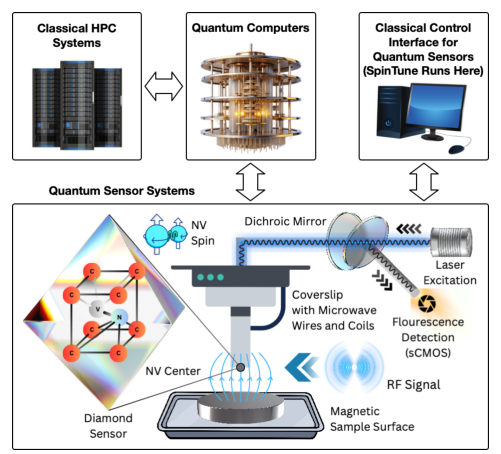
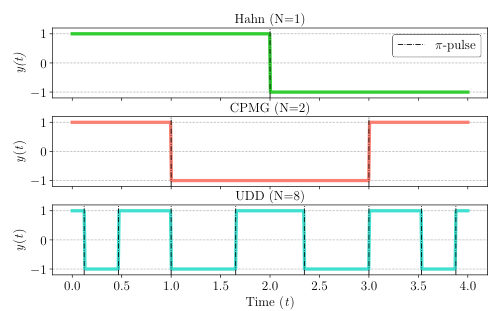
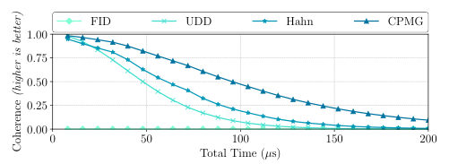
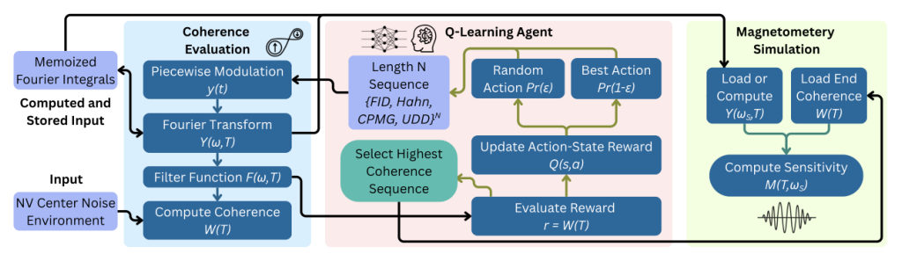
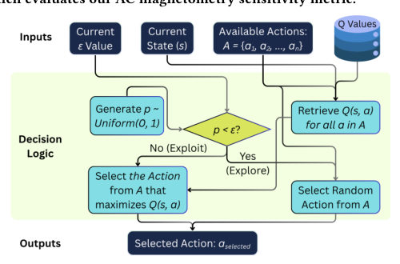
Summary. The paper introduces SpinTune, an RL-based software framework that autonomously discovers optimal dynamical decoupling sequences for quantum sensors. By learning to adaptively combine different pulse types, it significantly enhances coherence and magnetic field sensitivity in the presence of complex noise. The approach was successfully validated on both simulated NV center environments and physical neutral-atom hardware.
Why it may be interesting. It presents a powerful application of reinforcement learning to the control of open quantum systems, specifically for designing non-intuitive, aperiodic control protocols to mitigate complex, non-stationary environmental noise.
Main problem. Standard dynamical decoupling (DD) sequences are suboptimal in realistic, complex noise environments, limiting the reliability and sensitivity of quantum sensors like NV centers.
Main result. The SpinTune RL framework discovers adaptive DD sequences that outperform standard protocols (CPMG, UDD) by 35% in coherence and 80% in magnetometry sensitivity, approaching the theoretical Oracle limit.
Method. A reinforcement learning (Q-learning) approach that treats DD design as a sequential decision-making problem, using a piecewise representation of pulse sequences and an efficient Fourier-transform-based coherence evaluation pipeline.
Model / system. The study focuses on Nitrogen-Vacancy (NV) centers in diamond and neutral-atom systems (specifically QuEra's Aquila device), modeling decoherence from a Carbon-13 nuclear spin bath using a Gaussian noise spectral density.
Key observables. Quantum coherence (W), AC magnetometry sensitivity (eta), and the noise spectral density (S(omega)).
Important parameters / regimes. Evolution time (T) up to 200 microseconds, segment duration (delta t) of 4 microseconds, and noise parameters including amplitude, center frequency, and width.
Assumptions / limitations. Pulse changes are modeled as instantaneous (ignoring finite pulse slope), and the RL agent uses offline training to avoid the infeasibility of online learning during sensing.
Figures summary. Figure 1 shows the quantum-classical pipeline; Figure 2 compares modulation functions of standard DD sequences; Figure 3 shows coherence decay in various noise scenarios; Figure 4-5 detail the SpinTune RL architecture and decision logic; Figure 6-7 demonstrate improvements in sensitivity and coherence compared to baselines and the Oracle.
Paper structure. The paper introduces the problem of decoherence in sensors, presents the SpinTune RL framework and its computational optimizations, evaluates performance via large-scale simulations against standard and Oracle baselines, and validates the approach using a physical neutral-atom hardware platform.
Emerging quantum sensors are increasingly envisioned as components of hybrid quantum-classical high-performance computing, enabling new capabilities in scientific, cyber-physical, and machine-learning pipelines. However, their practical utility is limited by environmental decoherence, which degrades sensing reliability. While dynamical decoupling (DD) pulse sequences can mitigate this, standard methods are often suboptimal in the presence of realistic noise. We present SpinTune, a reinforcement learning software approach that autonomously discovers adaptive, piecewise DD sequences tailored to specific environments. Using a simulation model of a Carbon-13 spin bath, we show that SpinTune significantly outperforms standard DD sequences in preserving coherence.
Authors: Euijoon Kwon, Hyun-Myung Chun, Hyunggyu Park, Jae Sung Lee
Type: theory · Category: statistical mechanics · PDF: https://arxiv.org/pdf/2605.05038v1
Analysis basis: full PDF text, analyzed in chunks
Topic relevance: 🔥 non-equilibrium dynamics 4/5 · methods for driven-dissipative 3/5 · Keldysh / 2PI / non-Gaussian methods 2/5 · correlated / nonlocal dissipation 2/5 · driven-dissipative phase transition 2/5 · non-equilibrium universality 2/5
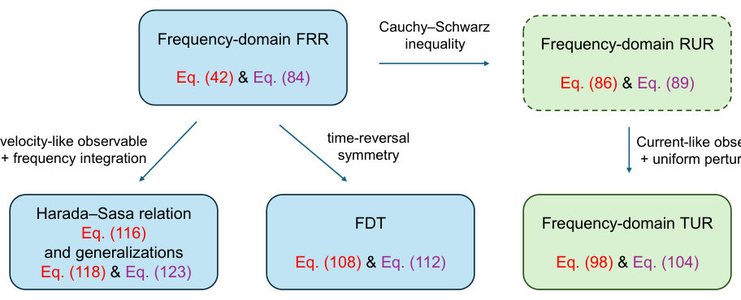
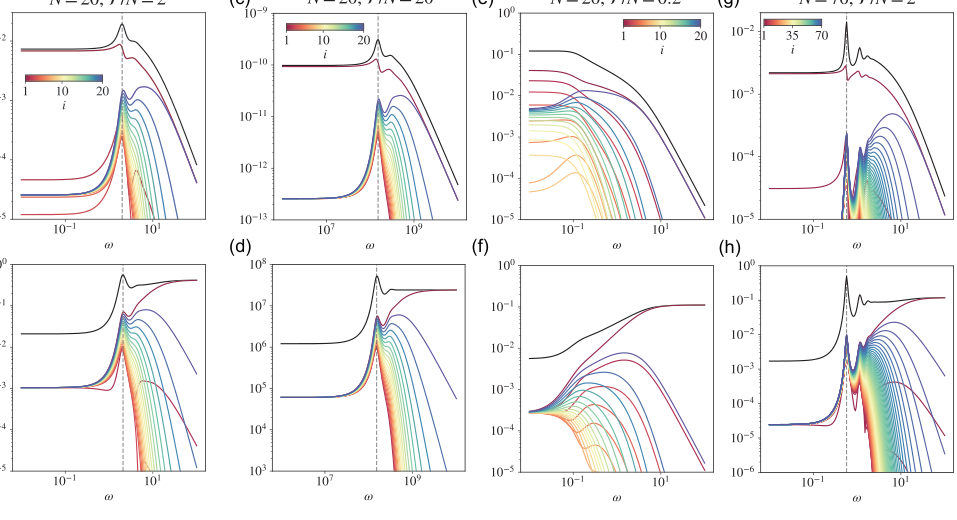
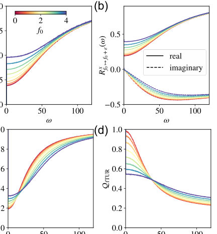
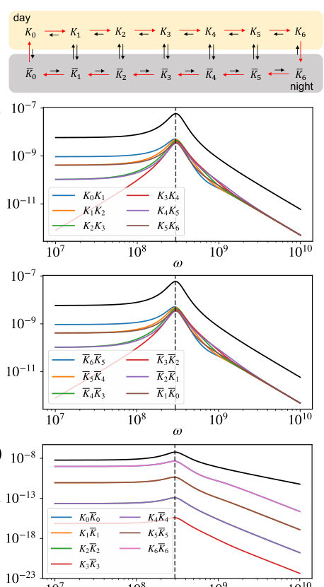
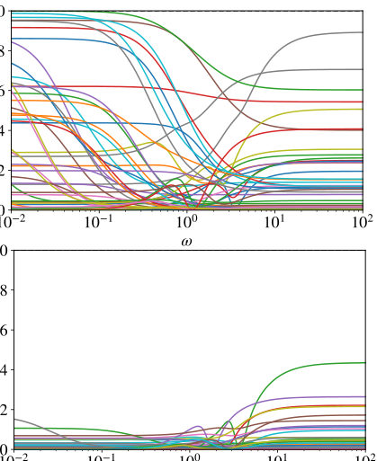
Summary. This paper establishes a unified, exact fluctuation-response theory in the frequency domain for both continuous Langevin and discrete Markov jump systems in nonequilibrium steady states. It demonstrates that the power spectrum of any observable can be reconstructed from local linear responses, providing a single foundational identity from which several known thermodynamic uncertainty relations and dissipation relations can be derived.
Why it may be interesting. This provides a rigorous framework for understanding frequency-dependent fluctuations and dissipation, which is directly applicable to the study of open quantum systems and the dynamics of driven many-body systems.
Main problem. The lack of a unified, exact equality relating spontaneous fluctuations to responses in the frequency domain for nonequilibrium steady states.
Main result. The derivation of a unified fluctuation-response theory in the frequency domain that expresses the power spectrum of general observables as a quadratic form of local responses, serving as a parent relation for various uncertainty relations and dissipation relations.
Method. The authors use perturbation theory with local impulsive perturbations, functional derivatives, and the mathematical framework of the excess propagator (the projected resolvent of the Fokker-Planck or Master equation generator).
Model / system. The theory applies to two classes of nonequilibrium steady states: overdamped Langevin dynamics (continuous-state) and Markov jump processes (discrete-state stochastic networks).
Key observables. Power spectrum of general observables, including state-dependent parts, current-like parts, empirical density, and empirical currents.
Important parameters / regimes. Finite frequency (omega), nonequilibrium steady states (NESS), mobility (M), temperature (T), transition rates (W), and entropy production rate (sigma).
Assumptions / limitations. The systems are assumed to be in nonequilibrium steady states, the dynamics are limited to overdamped Langevin or Markov jump processes, and the theory relies on linear response to small perturbations.
Figures summary. Figure 1 shows a hierarchy diagram illustrating how the central frequency-domain FRR acts as a foundation for deriving various inequalities (RUR, TUR) and equalities (FDT, Harada-Sasa). Figure 5 illustrates the continuous interpolation between the covariance spectrum and the entropy production rate in a linear setting.
Paper structure. The paper introduces the problem of frequency-domain FRRs, develops the unified theory for Langevin systems, extends the framework to Markov jump processes, derives various consequences (RUR, TUR, FDT, Harada-Sasa) using the Cauchy-Schwarz inequality, and provides rigorous mathematical proofs in the appendix.
We develop a unified fluctuation-response theory in the frequency domain for nonequilibrium steady states governed by overdamped Langevin dynamics and Markov jump processes. The relation expresses the power spectrum of general observables exactly as a quadratic form of local responses measured at the same frequency, thereby extending static nonequilibrium fluctuation-response relations to finite frequencies. The decomposition is spatial for Langevin systems and edge-resolved for Markov jump processes, and applies uniformly to state-dependent observables, current-like observables, and their combinations. As consequences of the same identity, we derive frequency-domain response uncertainty relations, kinetic and thermodynamic uncertainty relations, the equilibrium fluctuation-dissipation theorem, and Harada-Sasa-type relations. Applications to stochastic networks and driven diffusive systems illustrate how the theory resolves fluctuation spectra into edge-wise contributions and reveals frequency-dependent tradeoffs between fluctuations, response, and dissipation.
Authors: Simone Di Micco, Francesco Hoch, Alessandro Ciorra, Daniel Carvalho de Salles, Nicolò Spagnolo, Taira Giordani, Gonzalo Carvacho, Niki Di Giano, Marco Gardina, Andrea Crespi, Francesco Ceccarelli, Roberto Osellame, Fabio Sciarrino
Type: experiment · Category: quantum information and computing · PDF: https://arxiv.org/pdf/2605.04162v1
Analysis basis: abstract only; PDF text extraction failed or PDF unavailable
Topic relevance: 🔥 QC/QI experiment 4/5 · 🔥 quantum optics experiment 4/5 · analog quantum simulation 2/5 · interference shaping light 2/5 · entanglement & information structure 1/5 · quantum measurements 1/5
Summary. The paper presents a new 128-mode 3D integrated photonic chip designed for large-scale quantum information processing. By implementing reconfigurable unitary transformations, the authors successfully performed Boson Sampling and demonstrated quantum-based randomness generation. This represents a significant step toward scalable, stable, and programmable photonic quantum computing.
Why it may be interesting. This work is highly relevant for quantum optics and quantum information as it demonstrates a scalable hardware platform for high-dimensional quantum computing tasks and complex photonic state manipulation.
Main problem. Scaling integrated photonic hardware to achieve high-dimensional unitary transformations required for quantum advantage tasks like Boson Sampling.
Main result. Demonstration of a reconfigurable 128-mode 3D integrated photonic circuit (Qolossus 3D) capable of performing Boson Sampling and generating randomness.
Method. The researchers utilized a 3D integrated photonic device with a continuously coupled architecture and thermo-optic programmability, using single photons from a quantum dot source.
Model / system. A 128-mode reconfigurable 3D integrated photonic circuit (Qolossus 3D) using a continuously coupled architecture and thermo-optic tuning.
Key observables. Output photon distributions for up to 4 photons and randomness generation metrics.
Important parameters / regimes. 128 modes, up to 4 photons, 3D integrated architecture.
Assumptions / limitations. Indistinguishable single photons from a quantum dot source.
Paper structure. Introduction to integrated photonics, description of the Qolossus 3D architecture, implementation of Boson Sampling, demonstration of randomness generation, and validation against theoretical predictions.
Integrated quantum photonics has emerged as one of the leading platforms for scaling quantum information processing, offering compact, stable, and low-loss hardware with precise phase and mode control. Advances in integrated photonics architectures and active programmability now enable complex, high-dimensional transformations essential for quantum advantage tasks. We introduce an integrated, reconfigurable 3D photonic device with 128 modes for manipulation of single-photon quantum states (Qolossus 3D). Leveraging a continuously coupled architecture and thermo-optic programmability, the platform implements reconfigurable unitary transformations at unprecedented scale for integrated quantum optics. Exploiting indistinguishable single photons demultiplexed from a quantum dot source, we perform Boson Sampling across the large-dimensional chip and analyse the resulting output distributions for up to 4 photons. We then exploit it to demonstrate randomness generation via Boson Sampling. Agreement with theoretical predictions validates both the device's reconfigurable operation and the generation of random numbers. Our results highlight the scalability, stability, and precise control of integrated photonics for quantum information processing.
Authors: Lakshita Jindal, Kavita Jain
Type: theory · Category: statistical mechanics · PDF: https://arxiv.org/pdf/2605.05106v1
Analysis basis: full PDF text, analyzed in chunks
Topic relevance: 🔥 non-equilibrium dynamics 4/5 · 🔥 non-equilibrium universality 4/5 · Keldysh / 2PI / non-Gaussian methods 2/5 · analog quantum simulation 2/5 · entanglement & information structure 1/5
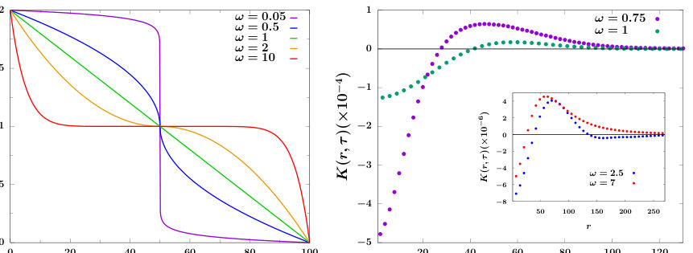
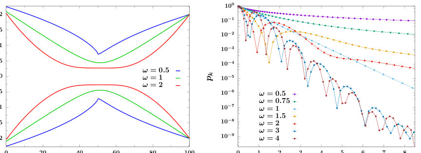
Summary. This paper explores how nonlinear quench protocols affect the spatial correlations of defects in the 1D Transverse Field Ising Model. It identifies that a new dephasing length scale is necessary to describe correlations in sublinear and linear quenches, and shows that the decay behavior follows a compressed exponential pattern.
Why it may be interesting. It provides new insights into the non-equilibrium dynamics and universality of correlation functions beyond the standard Kibble-Zurek mechanism, which is highly relevant for understanding many-body dynamics and state preparation in quantum simulators.
Main problem. Investigating the universality of kink-kink correlation functions in quantum systems undergoing nonlinear (algebraic) quenches across a second-order quantum critical point.
Main result. For superlinear quenches, the correlator depends only on the Kibble-Zurek length, whereas sublinear/linear quenches require an additional dephasing length; additionally, the dephased correlator decays as a compressed exponential with an exponent that varies with the quench exponent.
Method. The authors use adiabatic perturbation theory, the method of stationary phase, and saddle-point approximations for analytical results, alongside exact numerical integration of the Bogoli-de Gennes equations.
Model / system. The 1D Transverse Field Ising Model (TFIM) on a ring of N sites, where the transverse field g(t) varies algebraically near the critical point.
Key observables. Equal-time longitudinal kink-kink correlation function (dephased and off-diagonal components), excitation probability, and mean defect density.
Important parameters / regimes. Quench exponent (omega), quench time (tau), Kibble-Zurek length (xi-hat), and dephasing length (l).
Assumptions / limitations. The system is assumed to be in the slow-quench regime, and the initial state is the ground state of the initial Hamiltonian.
Figures summary. Figure 1 shows the nonlinear quench protocol and the resulting kink-kink correlator decay; Figure 3 compares excitation probability numerical and analytical results; Figure 8 demonstrates data collapse using different length scales; Figure 10 shows the effect of waiting time on dephasing.
Paper structure. The paper introduces the nonlinear quench protocol, applies the Jordan-Wigner and Bogoliubov transformations, uses adiabatic perturbation theory and stationary phase approximations to derive scaling laws, provides numerical verification, and discusses the implications for dephasing and optimization.
When a quantum system exhibiting a second order phase transition is quenched across the critical point in large but finite time, the dynamics are not adiabatic in the critical region and the Kibble-Zurek (KZ) mechanism provides a framework to determine local observables such as the mean defect density. However, to find higher-point functions, one has to go beyond the KZ paradigm asshown in recent works on one-dimensional transverse field Ising model (TFIM) following a linear quench. It has been found that (i) besides the KZ scale, the quench dynamics depend on another length scale that arises due to the finite phase difference between the low energy modes, and (ii) contrary to the expectations based on the KZ mechanism, in general, the correlation functions do not decay exponentially with distance. Motivated by these results for the linear quench, we are interested in understanding if these properties are universal, and consider the 1D TFIM when the transverse field varies algebraically in the vicinity of the critical field. We focus on the equal-time,longitudinal kink-kink correlation function at the end of the quench from the paramagnetic to the ferromagnetic phase, and find that (i) the correlator depends only on the KZ length for superlinear quenches, otherwise an additional dephasing length is required to describe it, and (ii) the dephased correlator decays as a compressed exponential with an exponent that changes continuously with the quench exponent. Our results are obtained using an adiabatic perturbation theory, analytical arguments and exact numerical integration of the relevant equations.
Authors: Javier Fernández, Albert Rico, David Viedma, Evelyn A. Ortega, Valerio Pruneri, Adam Vallés, Verònica Ahufinger, Anna Sanpera, Some S. Bhattacharya
Type: both · Category: quantum information and computing · PDF: https://arxiv.org/pdf/2605.04338v1
Analysis basis: abstract only; PDF text extraction failed or PDF unavailable
Topic relevance: 🔥 QC/QI experiment 4/5 · 🔥 quantum optics experiment 4/5 · quantum measurements 3/5 · entanglement & information structure 2/5
Summary. This paper presents a new protocol for certifying quantum behavior in high-dimensional systems without needing entanglement or measurement incompatibility. Using the orbital angular momentum of single photons, the authors demonstrate a robust method that works even in noisy environments. This approach is significant for developing scalable and secure high-dimensional quantum communication networks.
Why it may be interesting. It provides a practical method for validating high-dimensional quantum communication systems and offers a way to certify quantumness without the usual requirements of entanglement or measurement incompatibility.
Main problem. Certifying quantumness in high-dimensional prepare-and-measure scenarios is difficult due to the need for entanglement or measurement incompatibility and the presence of noise.
Main result. The authors implement a protocol that certifies quantumness between two parties without preshared resources or measurement incompatibility, demonstrating robustness via rank-stability analysis.
Method. The researchers propose and experimentally implement a protocol using rank-stability analysis of observed correlations to certify non-classicality in high-dimensional spaces.
Model / system. The experimental platform utilizes the orbital angular momentum (OAM) degrees of freedom of single photons to provide scalable high-dimensional Hilbert spaces.
Key observables. observed correlations and rank-stability analysis
Important parameters / regimes. high-dimensional Hilbert spaces, presence of noise
Assumptions / limitations. minimal prepare-and-measure scenario (sender encodes information, receiver performs a single measurement)
Paper structure. The paper introduces the challenge of high-dimensional certification, proposes a new protocol, describes the experimental implementation using photon OAM, and demonstrates robustness through rank-stability analysis.
Certifying quantum behavior from classically accessible data is essential for secure communication and scalable quantum technologies. While powerful certification methods such as Bell nonlocality and quantum steering exist, their implementation typically requires entanglement or additional assumptions, and experimental demonstrations mainly focus on low-dimensional systems. In minimal prepare-and-measure scenarios, where a sender encodes information into quantum states and a receiver performs a single measurement, robust certification becomes particularly challenging, especially in the presence of noise and in higher-dimensional Hilbert spaces. Here, we propose, design, and experimentally implement a protocol that certifies quantumness between two distant parties without the need for preshared resources or measurement incompatibility. The experiments are carried out using the orbital angular momentum degrees of freedom of single photons, chosen for providing increased dimensionality that is scalable. We demonstrate the robustness of the protocol through rank-stability analysis of the observed correlations, which enables the certification of non-classicality even in the presence of noise. Our results provide a practical route to validate high-dimensional quantum communication systems and open new possibilities for secure and dimension-efficient quantum information processing.
Authors: Alex H. Rubin, Vytautas Žalandauskas, Pranta Saha, Rubek Poudel, Aurora Teien, Liam Hofmann, Nathan R. Gonzalez, Scott Dhuey, Marianne Etzelmüller Bathen, Marina Radulaski
Type: both · Category: quantum information and computing · PDF: https://arxiv.org/pdf/2605.04277v1
Analysis basis: full PDF text, analyzed in chunks
Topic relevance: 🔥 QC/QI experiment 4/5 · 🔥 quantum optics experiment 4/5 · spintronics-quantum-optics interface 3/5 · interference shaping light 2/5
Summary. The paper demonstrates that integrating silicon carbide defects into nanopillars can overcome optical selection rules by generating a longitudinal electric field component. This allows researchers to observe 'dark' transitions and use nanophotonic structures as a symmetry-sensitive tool to identify the electronic structure of quantum defects. This approach provides a new way to characterize and manipulate spin defects for quantum technologies.
Why it may be interesting. This work is highly relevant to quantum optics and quantum information because it demonstrates a method to control light-matter interaction at the nanoscale, enabling access to previously inaccessible quantum emitters and providing a tool for characterizing the symmetry of solid-state qubits.
Main problem. The study addresses how optical selection rules in bulk 4H-silicon carbide suppress certain defect transitions and seeks to use nanophotonic integration to overcome these rules and resolve the identity of ambiguous spectral lines.
Main result. Nanopillars act as polarization converters that generate a longitudinal electric field component, thereby 'unlocking' previously dark transitions like the PL3 divacancy and allowing for the symmetry-based identification of defect states.
Method. The researchers combined low-temperature photoluminescence spectroscopy and temperature-dependent measurements with FDTD simulations and first-principles DFT calculations using the r2SCAN functional.
Model / system. The physical system consists of 4H-silicon carbide (4H-SiC) containing optically addressable spin defects, specifically neutral divacancies (VV0) and nitrogen-vacancy (NV-) centers, integrated into sub-wavelength dielectric nanopillars.
Key observables. Photoluminescence (PL) spectra, polarization-dependent emission, signal enhancement factors, and thermal quenching/activation energies.
Important parameters / regimes. Excitation wavelength (785 nm and 852 nm), temperature range (1.6 K to 300 K), nanopillar diameters (300 nm to 1100 nm), and crystallographic configurations (axial vs. basal).
Assumptions / limitations. The nanopillars were primarily optimized for photon collection efficiency rather than specific selection-rule engineering, and the $E_z$ component is treated as an incidental byproduct of the geometry.
Figures summary. Figure 1 shows SEM images and PL maps of nanopillars; Figure 2 and 3 compare PL spectra and transition dipole moments between bulk and nanopillar geometries; Figure 4 and supplementary figures show temperature-dependent PL and Arrhenius plots for extracting activation energies.
Paper structure. The paper introduces the problem of selection rules, describes the nanophotonic platform and experimental/computational methods, presents the activation of dark transitions via polarization transformation, uses symmetry analysis to identify specific defect states, and concludes with the utility of nanophotonics as a spectroscopic tool.
Optically addressable spin defects in silicon carbide, including the neutral divacancy (VV$^0$) and the negative nitrogen-vacancy (NV$^-$), are among leading building blocks of solid-state quantum technologies. Integrating these defects into photonic structures such as nanopillars improves photon collection efficiency, but the consequences extend further. We show that the sub-wavelength geometry of nanopillars drastically modifies the local electromagnetic environment, providing optical access to defect transitions that are otherwise suppressed by selection rules in bulk material. Using low-temperature photoluminescence spectroscopy, we observe that emission from the PL3 divacancy, which is nearly absent in planar devices, becomes pronounced in nanopillars owing to a polarization transformation of the excitation field within the pillar. We further leverage the orientation-dependent collection of nanopillars to resolve the origin of previously ambiguous spectral lines. In particular, the NV4$'$ feature displays the signal enhancement expected for axially oriented NV$^-$ centres, consistent with assignment to a higher excited state of the $kh$ defect configuration. Our results establish nanophotonic integration as a symmetry-sensitive probe that can both activate nominally dark transitions and identify the dipole character of poorly understood defect states.
Authors: Abdessamie Chhieb, Chaimae Banouni, Sliha Abdessamie
Type: theory · Category: quantum information and computing · PDF: https://arxiv.org/pdf/2605.05109v1
Analysis basis: full PDF text, analyzed in chunks
Topic relevance: 🔥 entanglement & information structure 4/5 · correlated / nonlocal dissipation 3/5 · non-equilibrium dynamics 3/5 · methods for driven-dissipative 2/5

Summary. This paper explores how fractional-time dynamics can control quantum resources in organic PBI molecular dimers. It demonstrates that the fractional order can suppress decoherence in highly entangled states and catalyze the creation of entanglement in weakly coherent states. This suggests that engineering memory effects in the environment is a viable strategy for robust quantum information processing.
Why it may be interesting. It provides a novel perspective on using non-Markovianity and memory effects (via fractional calculus) as a practical tool for engineering and stabilizing quantum correlations in open molecular systems.
Main problem. Investigating how fractional-time dynamics and memory effects can be used to control, preserve, and generate quantum resources like coherence, entanglement, and nonlocality in molecular dimers.
Main result. Decreasing the fractional order (tau) slows decoherence for strongly correlated states and acts as a catalyst for generating correlations in weakly coherent states, suggesting fractional dynamics as a control mechanism.
Method. The study employs the time-fractional Schrödinger equation with Caputo fractional derivatives and utilizes Mittag-Leffler functions to model non-Markovian, power-law relaxation dynamics.
Model / system. A dimeric arrangement of organic Perylene-Bisimide (PBI) molecules acting as two-level emitters, coupled via long-range dipole-dipole interactions within an effective Hamiltonian framework.
Key observables. Relative entropy of coherence, logarithmic negativity, concurrence, and CHSH inequality violation.
Important parameters / regimes. Fractional order (tau), transition frequencies (nu), dipole-dipable interaction strength (V12), detuning (Delta), and initial state purity (p).
Assumptions / limitations. Assumes identical emitters with parallel dipole moments, neglects external driving fields, and uses the Born-Markov approximation for the initial effective Hamiltonian derivation.
Figures summary. Figure 1 shows the molecular dimer schematic; Figure 2 compares fractional vs. standard evolution; Figure 3 shows temporal evolution of resources for various tau values; Figure 4 and 5 illustrate the dependence of resources on transition frequency and detuning.
Paper structure. The paper introduces the molecular system and the fractional-time framework, presents the mathematical solution using Mittag-Leffler functions, analyzes the impact of the fractional order on decoherence and resource generation, and explores the influence of frequency detuning and interaction strength.
In this work, we explore the dynamics of quantum correlations, namely coherence, entanglement, and nonlocality associated with a Bell state, in a dimeric arrangement of organic PBI molecules, mediated by dipole-dipole interactions, under time-fractional dynamics. Within the framework of the time-fractional Schrödinger equation (TFSE) with Caputo fractional derivatives, we explore system dynamics for different values of the fractional order $τ$, transition energies, interaction strength, and purity $p$. We employ the relative entropy of coherence, logarithmic entanglement entropy and concurrence, and CHSH inequality to estimate system dynamics associated with coherence, entanglement, and nonlocality, respectively. These findings highlight the role of the fractional order $τ$ in system dynamics, including memory effects and relaxation, and thereby bring together ideas from fractional calculus and quantum information theory perspectives and discuss methodologies to control and utilize these molecular quantum correlations.
Authors: Lu Liu, Ling-Xuan Kong, Ze-Yang Lu, Xu-Jie Peng, Xiao-Xu Fang, He Lu
Type: experiment · Category: quantum information and computing · PDF: https://arxiv.org/pdf/2605.04546v1
Analysis basis: full PDF text, analyzed in chunks
Topic relevance: 🔥 QC/QI experiment 4/5 · 🔥 quantum optics experiment 4/5 · entanglement & information structure 2/5 · quantum measurements 2/5
Summary. This paper demonstrates a way to verify and measure entanglement in a multi-user quantum network without needing to trust the measurement hardware. By using polarization to encode trusted information, the researchers successfully protected the network against time-shift attacks across 20 km of fiber.
Why it may be interesting. This work is highly relevant to quantum optics and quantum information as it provides a practical solution for scalable, secure entanglement distribution in fiber-based networks, addressing a critical security loophole in quantum communication.
Main problem. Reliable entanglement characterization in large-scale quantum networks is difficult because conventional entanglement witnesses are vulnerable to measurement-device attacks, such as time-shift attacks, which can falsely certify entanglement.
Main result. The authors experimentally demonstrated a measurement-device-independent (MDI) protocol for entanglement verification and quantification in a four-user, six-link fully connected time-bin quantum network, maintaining high fidelity over 20-km fiber channels.
Method. The researchers used a broadband PPLNOI waveguide source with wavelength-division multiplexing to distribute entangled photons and implemented an MDI approach by encoding trusted input states in the polarization degree of freedom to eliminate reliance on measurement device characterization.
Model / system. A four-user fully connected quantum network (Alice, Bob, Chloe, and David) using time-bin encoded photons generated via type-0 spontaneous parametric down-conversion in a periodically poled lithium niobate on insulator (PPLNOI) waveguide.
Key observables. Entanglement fidelity (F), entanglement witness values (W and MDI witness I), trace-distance entanglement measure (E_Tr), and coincidence-to-accidental ratio (CAR).
Important parameters / regimes. 20-km total fiber distribution, 100 MHz repetition rate, 1126 nm SPDC bandwidth, and 5 ns temporal delay for attack simulation.
Assumptions / limitations. The protocol assumes that the input states prepared in the polarization degree of freedom are trusted, even if the measurement devices are untrusted.
Figures summary. Figure 1 shows the network architecture and source schematic; Figure 3 illustrates the time-shift attack mechanism and the failure of conventional witnesses; Figure 4 details the wavelength-multiplexed distribution and the MDI verification results.
Paper structure. The paper introduces the problem of measurement vulnerabilities, describes the PPLNOI source and network architecture, demonstrates the vulnerability of conventional witnesses to time-shift attacks, presents the MDI protocol implementation, and concludes with the experimental verification and quantification of entanglement across all network links.
Fully connected quantum networks enable scalable quantum communication, yet reliable entanglement characterization without trusting measurement devices remains challenging. Here we experimentally demonstrate measurement-device-independent (MDI) entanglement verification and quantification in a time-bin-encoded fully connected quantum network. Using a broadband periodically poled lithium niobate on insulator source combined with dense wavelength-division multiplexing, we distribute all six pairwise entangled links among four users over 20-km fiber channels, preserving high-fidelity entanglement without active stabilization of the long-distance fiber links. We show that conventional entanglement witnesses can fail under untrusted measurement conditions. By encoding trusted input states in the polarization degree of freedom of the same photons, we realize MDI measurements without ancillary photons or additional experimental resources. Both entanglement verification and quantification are obtained from the same measurement dataset. Our results establish a practical and scalable approach for reliable entanglement characterization in quantum networks.
Authors: Kenric P. Nelson
Type: theory · Category: statistical mechanics · PDF: https://arxiv.org/pdf/2605.04493v1
Analysis basis: full PDF text, analyzed in chunks
Topic relevance: 🔥 non-equilibrium universality 4/5 · entanglement & information structure 3/5 · non-equilibrium dynamics 3/5 · driven-dissipative phase transition 2/5
Summary. The paper establishes a new axiomatic foundation for entropy in complex systems, proposing a 'coupled entropy' that uniquely measures uncertainty at a consistent informational scale. It demonstrates that this entropy is universal across various scaling classes and corrects misalignments found in previous models like Tsallis statistics. This provides a more robust tool for modeling non-equilibrium phenomena in complex adaptive systems.
Why it may be interesting. This is highly relevant for researchers in open quantum systems and many-body dynamics as it provides a new framework for quantifying uncertainty and entropy in non-equilibrium systems characterized by long-range correlations and heavy-tailed distributions.
Main problem. The lack of an axiomatic foundation for entropy in complex, non-equilibrium systems and the failure of existing generalized entropies (like Tsallis or Renyi) to maintain a consistent informational scale and extensivity.
Main result. The derivation of a unique, universal 'coupled entropy' that satisfies new axioms regarding uncertainty measurement at the informational scale and covers the full Hanel-Thurner universality scaling classes.
Method. An axiomatic derivation using a generalized algebraic framework (pseudo-algebra) and information geometry to establish requirements for entropy in the Coupled Exponential Family (CEF).
Model / system. The Coupled Exponential Family (CEF), specifically the Coupled Stretched Exponential Distribution (CSED), which models complex adaptive systems with both short-range (stretching) and long-range (coupling) dependencies.
Key observables. Entropy (trace and non-trace forms), partition function (Z), and the informational scale (sigma).
Important parameters / regimes. kappa (coupling/long-range dependence), alpha (straining/short-range dependence), sigma (informational scale), and d (dimensionality).
Assumptions / limitations. The derivation assumes the existence of a coupled exponential family derived from nonlinear differential equations and assumes statistical independence for the composition axiom.
Figures summary. Figure 1 compares normalization behavior in the Coupled Gaussian; Figure 2 shows multiplicative noise processes; Figure 3 compares score derivatives for q-exponential vs. coupled distributions; Figure 4 maps various entropies onto the density curve; Figure 5 shows entropy convergence as coupling increases; Figure 6 demonstrates entropy scaling with respect to scale and coupling.
Paper structure. The paper begins by identifying the gap in existing entropy axioms, introduces the Coupled Exponential Family and its mathematical framework, provides an axiomatic derivation of the new entropy, proves its uniqueness and universality across scaling classes, and concludes with applications to information thermodynamics and complexity.
An axiomatic foundation regarding the entropy for complex systems is established. Missing from decades of research was the requirement that entropy must measure the uncertainty at the informational scale of the maximizing distribution, where the log-log slope equals $-1$. Additionally, entropy must be extensive across the full universality scaling classes defined by Hanel-Thurner. The coupled entropy, maximized by the coupled stretched exponential distributions, is proven to be the unique, universal entropy that satisfies these requirements. The non-additivity of the entropy is equal to the long-range dependence or nonlinear statistical coupling. The entropy-matched extensivity is a function of the coupling, stretching parameter, and dimensions. Evidence is provided that the Tsallis $q$-statistics creates misalignment in the physical modeling of complex systems. Information thermodynamic applications are reviewed, including measuring complexity, a zeroth law of temperature, the thermodynamic consistency of the coupled free energy, and a model of intelligence in non-equilibrium.
Authors: Yujie Ji, Peiying Li, Yanhong Xiao, Yuzhuo Wang, Junlei Duan
Type: both · Category: other · PDF: https://arxiv.org/pdf/2605.04914v1
Analysis basis: full PDF text, analyzed in chunks
Topic relevance: 🔥 quantum measurements 4/5 · 🔥 quantum optics experiment 4/5 · QC/QI experiment 2/5 · methods for driven-dissipative 2/5
Summary. This paper quantifies how the motion of atoms through a Gaussian probe beam creates transit noise that degrades spin squeezing in rubidium vapor cells. By comparing different beam sizes and Larmor frequencies, the authors provide practical guidelines for optimizing probe parameters to reach the standard quantum limit.
Why it may be interesting. This paper is highly relevant for researchers in quantum optics and open quantum systems as it quantifies a fundamental decoherence-like mechanism (transit noise) that limits the precision of QND-based quantum metrology.
Main problem. The study investigates how transit noise, caused by atoms moving through the inhomogeneous intensity profile of a Gaussian probe beam, limits the performance of spin squeezing in coated rubidium vapor cells.
Main result. The researchers found that transit noise increases as the probe beam area decreases and becomes more significant when the Larmor frequency is below the noise linewidth; experimental squeezing degradation matched theoretical predictions.
Method. The work combines Monte Carlo simulations of atomic trajectories and collision models with experimental measurements of atomic spin noise spectra and spin squeezing at varying beam diameters and Larmor frequencies.
Model / system. The system consists of 87Rb atoms in a coated vapor cell (3x3x20 mm) at 58 degrees Celsius, using a Gaussian probe beam and a Faraday interaction Hamiltonian to perform QND measurements.
Key observables. Spin squeezing (in dB), atomic spin noise spectra, Faraday rotation signal, and atom-light coupling strength (kappa).
Important parameters / regimes. Probe beam diameter (0.6 mm to 2 mm), Larmor frequency (30 kHz to 500 kHz), and atom-light coupling strength (kappa).
Assumptions / limitations. The model uses the Holstein-Primakoff approximation, neglects the tensor and scalar terms of the Hamiltonian, and approximates the rectangular cell as a cylindrical one in simulations.
Figures summary. Schematics of atomic motion, plots of spin squeezing vs. beam size, atomic spin noise spectra comparing Gaussian and Tophat beams, and theoretical studies of noise at high coupling strengths.
Paper structure. The paper introduces the transit noise problem, describes the experimental setup and theoretical framework (Monte Carlo and Hamiltonian), presents results on noise scaling and Larmor frequency dependence, and concludes with implications for optimizing probe parameters.
Spin squeezing can suppress quantum projection noise via interparticle entanglement, therefore enabling measurement sensitivities beyond the standard quantum limit. In practice, however, the Gaussian and finite intensity profiles of the optical probe beam induce spatially inhomogeneous atom-light interactions. As polarized atoms move within a vapor cell, they experience position-dependent optical intensities, generating transit noise that limits spin squeezing performance. Here, we investigate the transit noise in a coated rubidium vapor cell through combined theoretical analysis and experimental measurements. By varying the probe beam diameter, we quantify the dependence of transit noise on beam size and atomic Larmor frequency. Our results show that, for a vapor cell with fixed dimensions, the transit noise increases as the probe beam spot area decreases. Moreover, when the Larmor frequency is below the characteristic linewidth of the transit noise, the noise contribution becomes larger. We further calculated and measured spin squeezing for different beam sizes and found an experimental difference of $2.7 \pm 0.2$ dB between 2~mm and 0.6~mm, similar to the theoretical prediction of $3.0 \pm 0.3$ dB. Theoretical analysis under conditions of stronger squeezing shows that transit noise becomes an even more critical limiting factor. These results provide practical guidance for optimizing probe beam parameters and suppressing transit noise in spin squeezing experiments.
Authors: Nicolas Laurent-Puig, Mina Doosti, Adriano Innocenzi, Eleni Diamanti
Type: both · Category: quantum information and computing · PDF: https://arxiv.org/pdf/2605.04650v1
Analysis basis: full PDF text, analyzed in chunks
Topic relevance: 🔥 QC/QI experiment 4/5 · 🔥 quantum optics experiment 4/5 · entanglement & information structure 2/5 · quantum measurements 2/5
Summary. This paper presents a method to achieve unconditional authentication in QKD without needing pre-shared secret keys by using a Hybrid Entangled Physical Unclonable Function. By leveraging the unique physical disorder of hardware, the authors experimentally demonstrate a secure, entanglement-based QKD protocol that remains robust under high channel attenuation.
Why it may be interesting. This work is highly relevant to quantum optics and quantum networks as it demonstrates a practical method to implement secure communication protocols using lightweight hardware primitives, bridging the gap between physical hardware properties and information-theoretic security.
Main problem. Addressing the 'chicken-and-egg' problem in QKD where an authenticated classical channel is required to prevent Man-in-the-Middle attacks, which typically necessitates a pre-shared secret key.
Main result. The first experimental realization of a fully information-theoretically secure (ITS) authenticated entanglement-based QKD protocol using a Hybrid Entangled Physical Unclonable Function (HEPUF), achieving low QBER even at 50 dB attenuation.
Method. The researchers integrated a hardware-based HEPUF protocol to generate an initial secret key, which is then used for either secret basis selection (Scenario 1) or Wegman-Carter authentication (Scenario 2) in an entanglement-based QKD setup.
Model / system. An experimental platform featuring a high-fidelity polarization-entangled Bell-state source produced via Type-II Spagnac-configuration SPDC in a ppKTP crystal, integrated with a Hybrid PUF architecture for authentication.
Key observables. Quantum Bit Error Rate (QBER), Bell-state fidelity, Secret Key Rate (SKR), and security parameter (epsilon).
Important parameters / regimes. Attenuation levels of 30, 40, and 50 dB; Bell-state fidelity of 99.17%; HEPUF security parameter epsilon < 2.5e-11; experimental bias delta of 0.0016.
Assumptions / limitations. Relies on the physical unclonability of the hardware-based HEPUF and the existence of a device with unique, stochastic manufacturing disorder.
Figures summary. Figure 1 shows the experimental setup schematic; Figure 2 displays the evolution of QBER and the comparison of SKR vs. attenuation for two scenarios; Figure 3 presents the experimental density matrix via quantum state tomography.
Paper structure. The paper introduces the authentication bottleneck in QKD, describes the HEPUF architecture and the two proposed QKD integration scenarios, details the experimental setup and hardware, presents the security analysis and finite-key rate optimization, and concludes with experimental validation across various attenuation regimes.
Quantum Key Distribution (QKD) enables Information-Theoretically Secure (ITS) key exchange, robust even against future quantum computing threats. However, a fundamental limitation of QKD is the requirement for an authenticated classical channel, which necessitates a pre-shared secret key. In this work, we address this challenge by adopting a Hybrid Entangled Physical Unclonable Function (PUF) protocol for authentication. We demonstrate that this PUF-based method generates an ITS initial key under minimal explicit hardware assumptions. This approach allows us to experimentally perform a fully ITS-authenticated entanglement-based QKD protocol that relies solely on such assumptions, effectively eliminating the need for pre-shared secrets. This represents a significant step towards the practical realization of quantum network protocols using lightweight, readily available hardware assumptions, without weakening security guarantees.